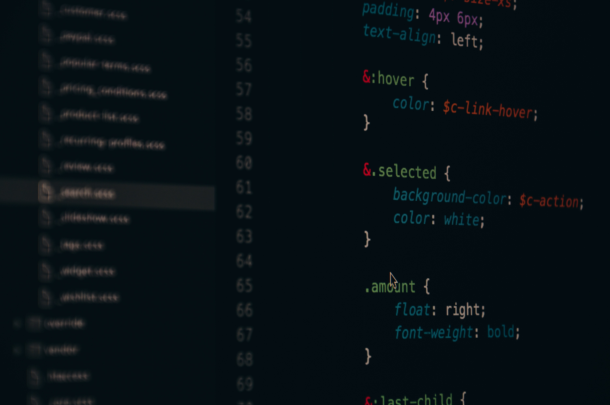

What Is Programming?
Programming is one of the most common types of tech careers that's out there in the world. In a basic sense, programming is the process of creating and inputting a set of instruction or commands for a computer to follow. Programming is far more complex than that, of course, it requires a great deal of patience and problem-solving skills. For instance, you may need to create a program that collects, analyzes, and reorganizes all the details of a banking system. This is something that will most likely take a great deal of time, and trial and error is the only to real way to make sure your program works. Trial and error is the process of running a program and seeing what your results are. If the output is what it needs to be, and there are no syntax or logical errors, you're good to go. However, if there is a syntax or logical error, you'll have to go back and reanalyze your code. You'll have to find and fix the error in your logic or syntax, which may be really simple or really complicated. Although it has its difficulties, programming is a really interesting and beneficial career.

Why Should I Learn Programming?
With the many different programming languages out there, you essentially become a multi-tool of coding information, which can be both financially or intellectually helpful in the future. Programming can give you great experience for skills such as problem solving and analytical thinking. This career provides you with a way to create something for you or your community, may that be websites, applications or, if you're really skilled large scale programs like responsive AIs or games. Programming is a career that is beneficial for many reasons and can be a valuable asset for your future endeavors. However, it may not be the best career for everybody. I've seen quite a few people have more success in the other fields I will talk about on this website.
Why Programming May Not be for You
While programming may be beneficial for some people who want to persue a tech based career, not everbody is particulary drawn to this career. Programming requires patience, analytical skills, and the ability to sit at a desk with a computer in front of you all day. As someone who likes to work with my hands, I find it hard sometimes to just sit down and write down the codes for my program. There is also the need to have patience. Ninety-Nine percent of the time, the code you write will not be perfect on the first go. There may be a syntax error, a logical error, or even a compilation error. Your job then would be to find what's wrong and fix it. This could range from something as small as a missing semi-colon, or big as a logic error that makes you rework the entire program. You need a specific amount of patience to both enjoy and be successful in the programming career. These two skills are essential for succeeding in the programming field, so if you don't really have or want these skills, this path may not be your cup of tea.
